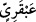

Kamus’a göre Abkar, cinleri çok bir yer, kumaşı çok güzel bir bölgedir. Abkariy ise
döşeklerden bir çeşittir. Bir yaygı çeşididir.
Müfredât’da, cinlere âid bir yer olup gerek insandan, gerek hayvandan ve gerekse
kumaştan emsali az ve nâdir olan oraya nisbet edilir, denir. “Abkariyyün hisân”
buyruldu. Bu bir çeşit yatak olup Allah onu cennet yataklarına örnek kıldı.
Tekmile’de şunlar zikredilir; “abkar” süslemelerin yapıldığı bir yer adıdır. Araplar
güzel bir şey gördüklerinde oraya nisbet ederlerdi. Bu sebeple Allah Teâlâ onlara,
adetlerine göre hitab etti.
Fethürrahmân’da, “ “üzerinde şekillerin ve çeşitli süslerin bulunduğu örtüler,
yaygılardır” denmiştir. Araplar bir şeyi güzel gördüklerinde “Abkariyy” derler. İbn
Atiyye demiştir ki; Peygamberimiz (s.a.)’in sözü de bu kabildendir. “Rüyamda Ömer b.
Hattâb’ın bir kuyudan su çekmekte olduğunu gördüm, onun yaptığı bu işi yapan
abkarî/efendi görmedim.”[189] “Abkar”ın, “çok güzel yaygılar yapan Mekkeli bir
adamın adı olduğu” da söylemiştir. Bu sebeple her güzel ve yeni şey ona nisbet edilirdi.
Allah önceki iki cennet hakkında “Hepsi de örtüleri atlastan minderlere
yaslanırlar” (er-Rahmân, 55/54) buyurdu. Değerleri çok yüksek ve akıllarla idrak
edilme sınırları dışında olduğu için yüzü ve astarı zikretmedi. Sonraki iki cennet
hakkında ise “Yeşil yastıklara ve harikulâde güzel döşemelere yaslanırlar” (er-
Rahmân, 55/76) buyurdu. Bu âyette bununla aralarındaki fark anlaşılır.
“İstebrak”, ipek demektir. “Abkariyy” ise süslü örtü demektir. İpek, süslü örtüden
daha değerlidir.
İbnu’ş-Şeyh demiştir ki; rafraf, bir döşektir ki, sâhibi ona yerleştiğinde sevincinden
sâhibini sağa sola ve istediği yöne uçurur. Miraç hadisinde rivâyet edilmiştir ki, Rasûl-i
Ekrem (s.a.) Sidre-i müntehâya ulaştığında Rafraf gelip onu Cibrîl (a.s.)’dan aldı ve
onu Arşın sâhibine uçurdu. Aleyhisselâm anlattı ki, “Beni kimi zaman alçalarak, kimi
zaman da yükselerek uçurdu. Taki Rabbimin huzurunda durdurdu.”[190] Dönme zamanı
gelince yine onu alıp yükselerek ve alçalarak aşkla uçurdu ve Cibrîl (a.s.)’a teslim etti.
Böyle olunca Rafraf, çok önemli ve özel hizmetlere mahsus işlerde görevli, Allah’ın
huzurunda bir hizmetçidir. Bürak’ın peygamberlerin binmelerine tahsis edilmiş bir
binek olduğu gibi. Buradaki Rafraf, Allah’ın iki cennet ehli için musahhar kıldığı,
onların üzerine yaslandıkları döşekleridir. Sâhibini alıp o nehirlerin kıyılarına ve
sâhibinin dilediği yerlere, çadırlarına, eşlerine ve cennet köşklerine uçurur. Bu
açıklama 62. âyet-i kerîmede geçen “dûn” kelimesinin yakınlık anlamında, “o iki
cennetten daha üstün” olması hâlindedir. “Hepsi de örtüleri atlastan minderlere
yaslanırlar” (er-Rahmân, 55/54) âyet-i kerîmesinde geçen “fürüş”tan, rafraf’ın daha
yeşil olduğu anlaşılır.